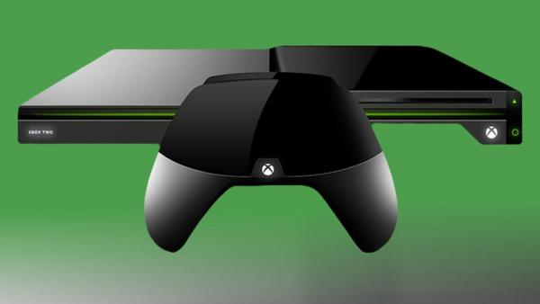
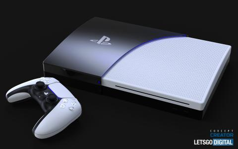
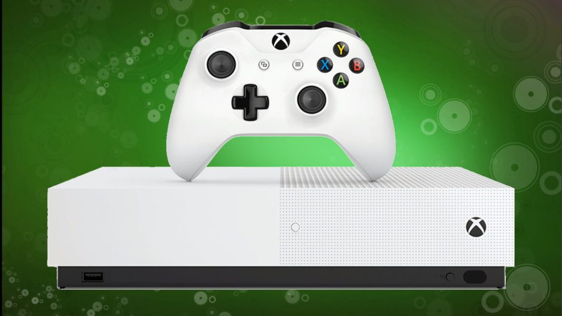
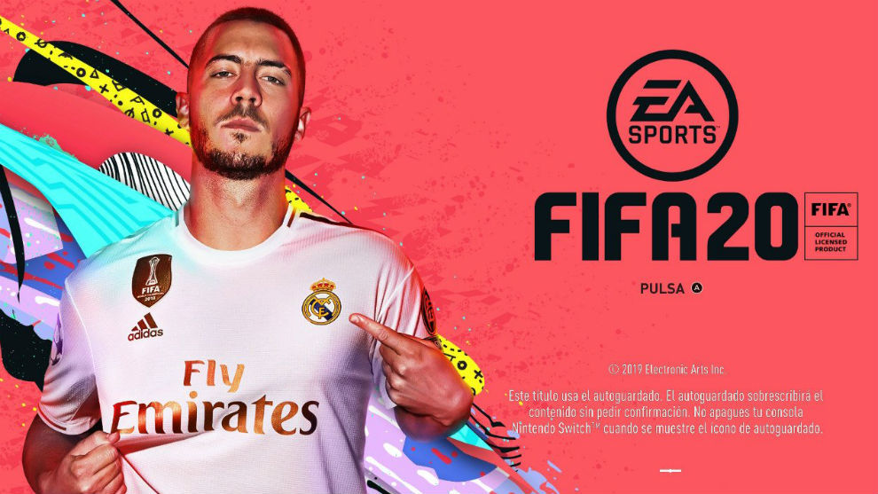

Hola bienvenidos a mi primera web.
Me gustaria que os suscribierais a los canales de mis amigos
empoleon_55 este su primer video
killerpro2020 este es su primer video
Consolas
Se dice que la Xbox scorpio es la mejor consola en el momento aun no se sabe como va a ser.

Otra de las mejores consolas del mundo es la PS5 no se si ya ha salido a la venta si acaso en china.

Yo tengo Xbox one s mucha gente dice que es la mejor consola del mundo con la ps4 pro

Videojuegos
Uno de los juegos mas conocidos en el momento es fortnite. mas

Otro juego tambien muy conocido es el minecraft mas

El fifa es otro juego tambien muy conocido
